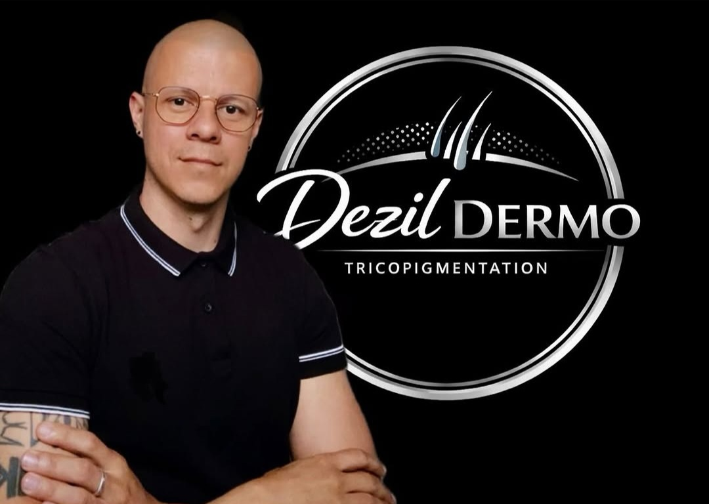

Retrouvezvotre densitécapillaire
Technique brevetée de micropigmentation du cuir chevelu — une solution esthétique non invasive pour masquer la perte de cheveux et retrouver confiance en soi.

Olivier Turpin
Dezil Dermo
Je suis spécialisé dans la tricopigmentation, une technique de dermopigmentation capillaire avancée permettant de recréer visuellement l’effet d’un crâne rasé, de densifier une chevelure clairsemée ou encore de camoufler certaines cicatrices du cuir chevelu.
Basé à Saint-Sulpice-la-Pointe (81370), j’accompagne mes clients avec une approche précise, naturelle et personnalisée afin d’obtenir un résultat réaliste et harmonieux.
Certifié en tricopigmentation, je travaille dans le strict respect des normes françaises en vigueur. Je suis également titulaire de la certification Hygiène & Salubrité obligatoire pour les pratiques de tatouage par effraction cutanée ainsi que du Certibiocide, garantissant une utilisation réglementée et sécurisée des produits de désinfection professionnels.
Mon objectif est d’offrir des prestations de haute qualité, réalisées avec rigueur, transparence et professionnalisme, tout en mettant l’accent sur l’écoute, le confort et la satisfaction de chaque client.
Technique Tricopigmentation® brevetéePigments biorésorbables — résultats naturels et évolutifs
La Tricopigmentation®
La Tricopigmentation® est une technique brevetée mise au point par les spécialistes italiens Ennio Orsini et Toni Belfato. Elle consiste à introduire des micro-pigments biorésorbables dans la couche superficielle du derme, créant une simulation parfaite du follicule pileux.
Pigments biorésorbables
Contrairement au tatouage permanent, les micro-pigments évoluent naturellement avec le temps, permettant des ajustements réguliers.
Résultats naturels
Chaque micro-point reproduit fidèlement un follicule pileux — indiscernable d'une vraie repousse capillaire.
Non invasif
Aucune chirurgie, aucune douleur significative, aucun temps de récupération. Résultat immédiat dès la première séance.
Pathologies traitées
Alopécie androgénique
La calvitie liée aux hormones. La tricopigmentation crée une illusion de densité en reproduisant des micro-follicules sur les zones clairsemées — effet rasé ou densification naturelle selon votre souhait.
Alopécie areata (pelade)
Perte de cheveux par plaques due à une réaction auto-immune. La tricopigmentation camouffle les zones dégarnies en reproduisant la couleur et texture du cuir chevelu environnant.
Alopécie de traction
Perte causée par une tension répétée (coiffures serrées, extensions). La technique redessine les zones frontales et temporales fragilisées pour restaurer un aspect naturel.
Trichotillomanie
Trouble compulsif entraînant l'arrachage de cheveux. La tricopigmentation masque visuellement les zones dégarnies et aide à retrouver confiance en soi.
Cicatrices chirurgicales
Cicatrices post-opératoires sur le cuir chevelu. Des micro-pigments sont déposés avec précision pour reproduire l'apparence des follicules environnants.
Cicatrices de greffe FUE / FUT
Après une greffe capillaire, des cicatrices (linéaires FUT ou ponctuelles FUE) peuvent rester visibles. La tricopigmentation les camoufle pour un rendu parfaitement homogène.
Cicatrices d'accidents et brûlures
Sur les zones sans repousse suite à un traumatisme ou brûlure, la tricopigmentation redonne l'illusion d'un cuir chevelu naturel en reconstituant la densité folliculaire.
Densification capillaire
Pour les personnes ayant encore des cheveux mais une densité insuffisante. Des micro-points sont ajoutés entre les cheveux existants pour créer un effet de volume immédiatement visible.
Lors de la première séance, nous définissons ensemble la ligne frontale, la zone à traiter et l’effet recherché.
Cette étape permet de créer une première implantation légère et naturelle afin de poser la base du résultat final. Le travail reste volontairement discret pour permettre au cuir chevelu de réagir progressivement aux pigments.
Après la cicatrisation de la première séance, la seconde intervention permet d’intensifier la densité visuelle et d’ajuster certains détails si nécessaire.
Cette étape apporte davantage de profondeur et de réalisme tout en harmonisant l’ensemble du résultat.
La troisième séance sert à perfectionner la tricopigmentation en renforçant les zones qui nécessitent plus de couverture ou de définition.
Elle permet d’obtenir un rendu plus homogène, précis et durable, adapté à la morphologie et au style souhaité
La dernière séance correspond aux finitions. Elle permet de stabiliser le résultat final, corriger les éventuelles petites irrégularités liées à la cicatrisation et optimiser l’aspect naturel de la tricopigmentation.
À l’issue de cette étape, le résultat est complet, équilibré et prêt à évoluer naturellement dans le temps.
Chaque séance est espacée de plusieurs semaines afin de respecter le temps de cicatrisation du cuir chevelu et garantir une implantation optimale des pigments. Le nombre de séances peut varier selon le type de peau, la zone à traiter et le résultat recherché.
Avant / Après
Glissez sur chaque photo pour découvrir la transformation
Réserver
une séance
Remplissez le formulaire ci-contre. Je vous contacte dans les 24h pour confirmer votre créneau.
Envoyez votre demande
Remplissez le formulaire avec vos disponibilités
Confirmation sous 24h
Email de confirmation avec votre créneau validé
Consultation initiale
Nous définissons ensemble votre protocole personnalisé
Demande de rendez-vous
Contact &
Adresse
Adresse
Saint-Sulpice-la-Pointe
81370 — Tarn (81)
Téléphone
+33 6 12 39 20 97
d.tricopigmentation@gmail.com